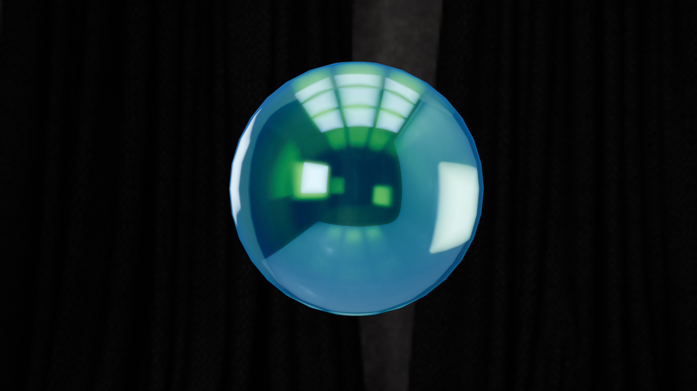
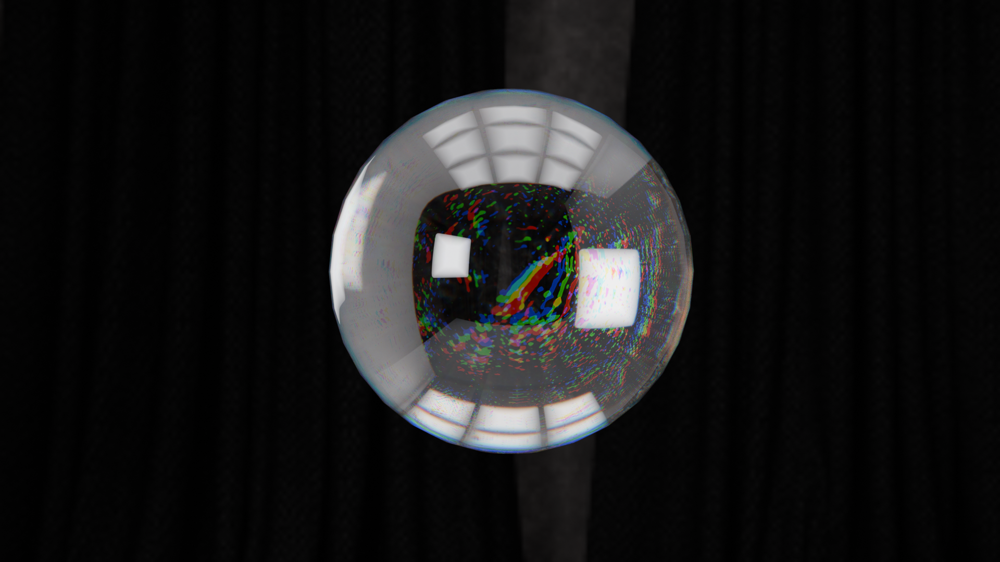
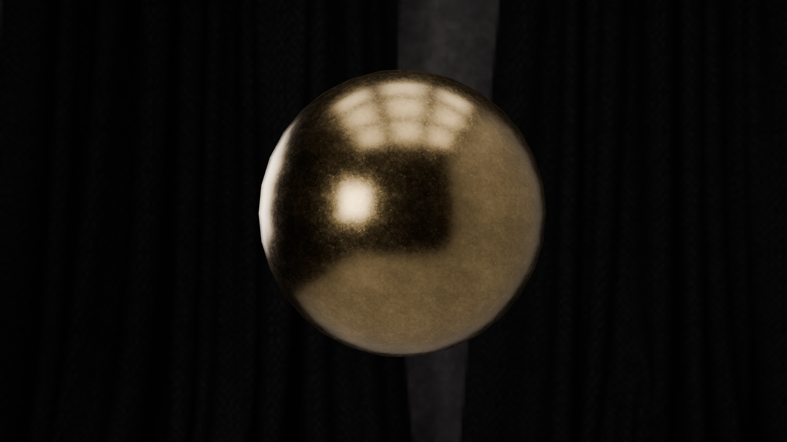
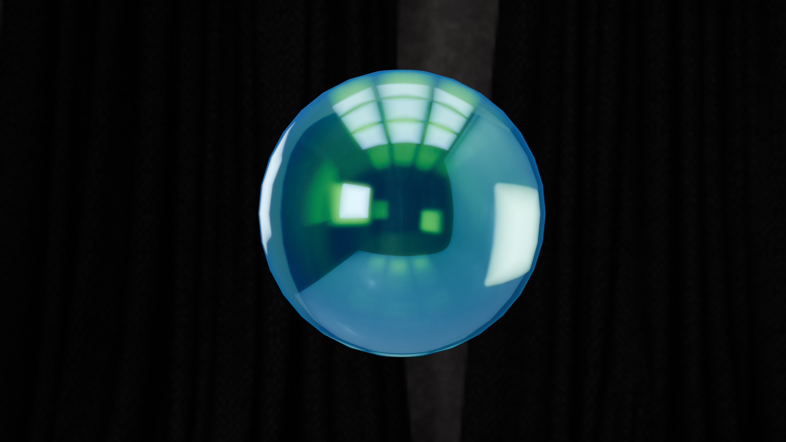
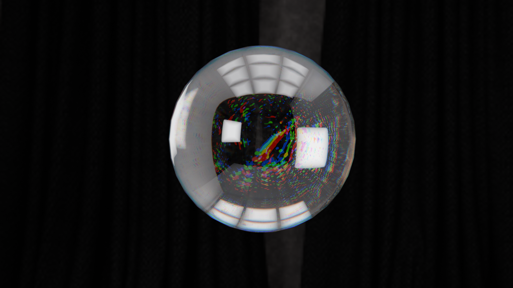
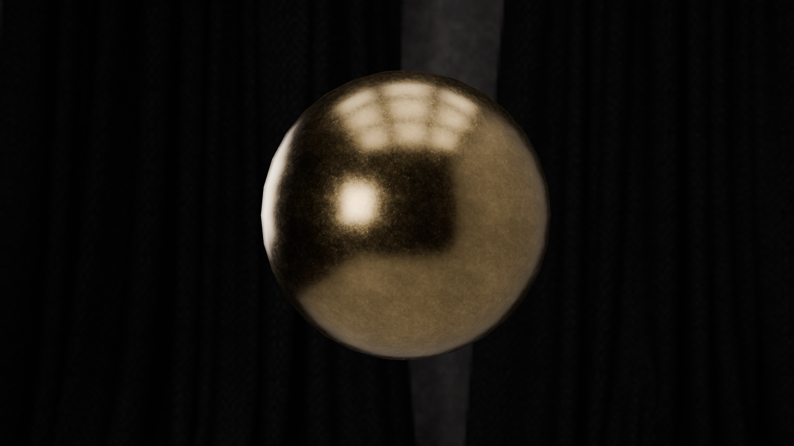

Método 1: Luz Lateral
Ilumina desde el costado para generar volumen y profundidad en el objeto.

Método 2: Luz Cenital
Simula la luz del sol desde arriba. Ideal para dramatismo o iluminación ambiental.

Método 3: Luz Frontal
Ilumina de frente y reduce sombras. Útil para mostrar detalles sin contraste.


 




